Courses
Masters in Artificial Intelligence¶
At some point in my career, I want to pursue a Ph.D.
As an intermediate step towards this goal, I seized the opportunity that quarantining during the COVID-19 pandemic offered in remote work at Wayfair to pursue double full-time work and school.
Simultaneously leading engineering work on the Data Catalog at Wayfair and concentrating my coursework on Natural Language Processing and Knowledge Representations strengthened my understanding of the academic and practical applications of knowledge graphs and information retrieval for database metadata.
The following are the course descriptions for each of the courses I completed during my masters education (in order of semester):
2021 Fall¶
MATH7233: Graph Theory
Covers fundamental concepts in graph theory. Topics include adjacency and incidence matrices, paths and connectedness, and vertex degrees and counting; trees and distance including properties of trees, distance in graphs, spanning trees, minimum spanning trees, and shortest paths; matchings and factors including matchings in bipartite graphs, Hall&'s matching condition, and min-max theorems; connectivity, such as vertex connectivity, edge connectivity, k-connected graphs, and Menger's theorem; network flows including maximum network flow, and integral flows; vertex colorings, such as upper bounds, Brooks, theorem, graphs with large chromatic number, and critical graphs; Eulerian circuits and Hamiltonian cycles including Euler's theorem, necessary conditions for Hamiltonian cycles, and sufficient conditions; planar graphs including embeddings and Euler's formula, characterization of planar graphs (Kuratowski's theorem); and Ramsey theory including Ramsey's theorem, Ramsey numbers, and graph Ramsey theory.
CS5800: Algorithms
Presents the mathematical techniques used for the design and analysis of computer algorithms. Focuses on algorithmic design paradigms and techniques for analyzing the correctness, time, and space complexity of algorithms. Topics may include asymptotic notation, recurrences, loop invariants, Hoare triples, sorting and searching, advanced data structures, lower bounds, hashing, greedy algorithms, dynamic programming, graph algorithms, and NP-completeness.
2022 Spring¶
CS6120: Natural Language Processing
Provides an introduction to the computational modeling of human language, the ongoing effort to create computer programs that can communicate with people in natural language, and current applications of the natural language field, such as automated document classification, intelligent query processing, and information extraction. Topics include computational models of grammar and automatic parsing, statistical language models and corpora understand language, models of discourse structure, and language use by intelligent agents. Course work includes formal and mathematical analysis of language models, and implementation of working programs that analyze and interpret natural language text.
CS6140: Machine Learning
Provides a broad look at a variety of techniques used in machine learning and data mining, and also examines issues associated with their use. Topics include algorithms for supervised learning including decision tree induction, artificial neural networks, instance-based learning, probabilistic methods, and support vector machines; unsupervised learning; and reinforcement learning. Also covers computational learning theory and other methods for analyzing and measuring the performance of learning algorithms. Course work includes a programming term project.
2022 Fall¶
CS5180: Reinforcement Learning
Introduces reinforcement learning and the underlying computational frameworks and the Markov decision process framework. Covers a variety of reinforcement learning algorithms, including model-based, model-free, value function, policy gradient, actor-critic, and Monte Carlo methods. Examines commonly used representations including deep learning representations and approaches to partially observable problems. Students are expected to have a working knowledge of probability and linear algebra, to complete programming assignments, and to complete a course project that applies some form of reinforcement learning to a problem of interest.
CS6200: Information Retrieval
Provides an introduction to information retrieval systems and different approaches to information retrieval. Topics covered include evaluation of information retrieval systems; retrieval, language, and indexing models; file organization; compression; relevance feedback; clustering; distributed retrieval and meta-search; probabilistic approaches to information retrieval; Web retrieval; filtering, collaborative filtering, and recommendation systems; cross-language IR; multimedia IR; and machine learning for information retrieval.
2023 Spring¶
CS5100: Foundations of Artificial Intelligence
Introduces the fundamental problems, theories, and algorithms of the artificial intelligence field. Topics include heuristic search and game trees, knowledge representation using predicate calculus, automated deduction and its applications, problem solving and planning, and introduction to machine learning. Required course work includes the creation of working programs that solve problems, reason logically, and/or improve their own performance using techniques presented in the course. Requires experience in Java programming.
CS5340: Human-Computer Interaction
Covers the principles of human-computer interaction and the design and evaluation of user interfaces. Topics include an overview of human information processing subsystems (perception, memory, attention, and problem solving); how the properties of these systems affect the design of user interfaces; the principles, guidelines, and specification languages for designing good user interfaces, with emphasis on tool kits and libraries of standard graphical user interface objects; and a variety of interface evaluation methodologies that can be used to measure the usability of software. Other topics may include World Wide Web design principles and tools, computer-supported cooperative work, multimodal and “next generation” interfaces, speech and natural language interfaces, and virtual reality interfaces. Course work includes both the creation and implementation of original user interface designs, and the evaluation of user interfaces created by others. Requires knowledge of C programming language/UNIX.

Bachelors of Science in Mathematics¶
After transferring 1-2 years of credits from high school, I entered my undergraduate degree Undeclared. As part of my exploration through programs at Northeastern, I bounced from Computer Science to Music Technology and finally landed on Mathematics as a practical extension of my passion for Philosophy.
Below are categorized lists of relevant courses I completed during my bachelors degree:
| Number | Name |
|---|---|
| MATH2351 | Ordinary Differential Equation |
| MATH3081 | Probability and Statistics |
| MATH3150 | Real Analysis |
| MATH3175 | Group Theory |
| MATH3331 | Elementary Differential Geometry |
| MATH3527 | Number Theory |
| MATH3533 | Combinatorial Mathematics |
| MATH4581 | Statistics & Stochastic Procsses |
| MATH4681 | Probability and Risks |
| MATH5131 | Introduction to Math Methods & Models |
| Number | Name |
|---|---|
| CS1800 | Discrete Structures |
| CS2500 | Fundamentals of Computer Science 1 (HONORS) |
| CS2800 | Logic and Computation |
| Number | Name |
|---|---|
| MUSC1201 | Music Theory 1 |
| MUST1220 | Introduction to Music Technology |
| PHYS1151 | Physics for Engineering 1 |
| POLS1150 | American Government |
| RELS1260 | Apocalypticism in Film |

High School Diploma¶
At the Massachusetts Academy for Math and Science, senior year of high school consisted of a full course-load at Worcester Polytechnic Institute (WPI) and two senior projects. Combined with my taking AP Calculus B/C in my sophomore year at Mount Saint Charles, I transferred into Northeastern University as a freshman with the following credits:
| Number | Name |
|---|---|
| CHEM1211 | General Chemistry |
| ENGL4520 | American Novels 2 |
| ENGL4667 | American Realism |
| MATH1341 | Calculus 1 for Science / Engineering |
| MATH1342 | Calculus 2 for Science / Engineering |
| MATH1365 | Introduction to Logic and Math Reasoning |
| MATH2321 | Calculus 3 for Science / Engineering |
| MATH2331 | Linear Algebra |
| PHIL1101 | Introduction to Philosophy |
| PHIL1990 | Elective: Existentialism |
| PHYS2303 | Modern Physics |